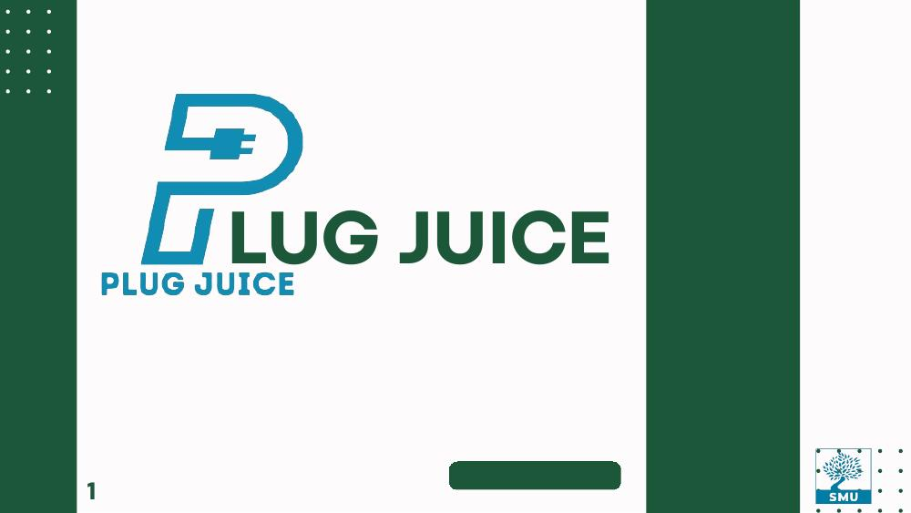
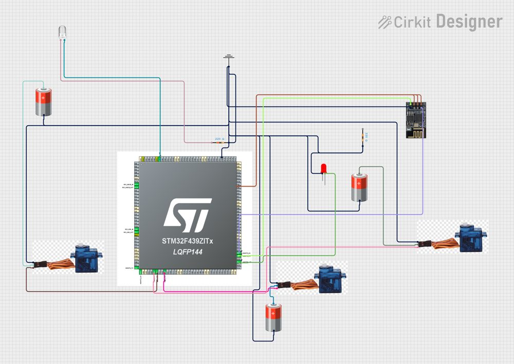
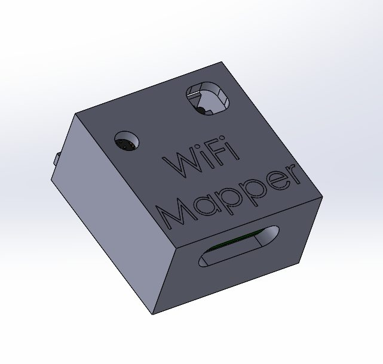
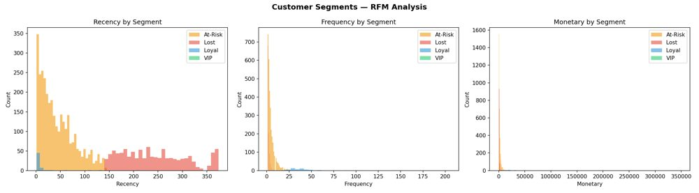

Academic Journey
My projects, favourite courses, internships and company visits at MedTech.
Internships
Internship
My internship experience will be added here.
Projects
Team projects from my years at MedTech, each with its code, slides and report.

PlugJuice – Smart Plug
A smart plug that tracks energy consumption, protects devices from voltage spikes and surges, and can be controlled remotely, with a dashboard to monitor each plugged device. As a team we built a 3D prototype in SolidWorks, set up the sensors and circuits, and added the remote-control feature.

EcoSort – Smart Waste-Sorting Bin
A smart bin that identifies the type of waste and sorts it into the right compartment, with a dashboard that tracks the fill level of each bin using SQL. Built with sensors and a Raspberry Pi programmed in Python, with a 3D prototype designed in SolidWorks.

SmartHouse – Voice-Controlled Home on STM32
A mobile app sends voice commands to an n8n workflow running a local LLM (Ollama), which turns them into HTTP commands for an STM32 board. The STM32, programmed in C with an ESP8266 web server, controls the door, window, light and fan.

Carnet – Car-Management App Concept
A startup concept for a car-management app: market study, business-opportunity screening, feasibility and a final pitch.

Wi-Fi Signal Mapper – ESP32 on a Custom PCB
A handheld ESP32 device on a custom PCB designed in Altium, in a 3D-printed enclosure. It measures Wi-Fi strength room by room, and a Flask server with a Tkinter app turns the readings into a heatmap.

Customer Segmentation & Demand Prediction
On the Online Retail II dataset, the team built RFM features and used K-Means to split customers into VIP, Loyal, At-Risk and Lost segments, then compared Logistic Regression, KNN and Random Forest to predict demand.

RPS Arena – Multiplayer Game over TCP/UDP
Real-time rock-paper-scissors built on raw sockets: one Python game server handles accounts, rooms and scores over TCP and heartbeats, chat and countdown over UDP, for a Tkinter desktop client and a Flask web client.
Before MedTech
Online Appointment Management System
A dynamic web application to manage medical appointments:
- Checks doctors' availability and schedules patient appointments by date and time.
- Verifies patient records and shows their medical history when it exists in the database.
- Stores and retrieves patient and doctor data in a structured SQL database.
Interesting Courses
Courses that changed how I think about engineering.
Embedded Systems
Programming an STM32 (ARM Cortex-M4) board in C: GPIO, interrupts and SPI, real-time design with RTOS concepts and system modelling with SysML. The course ended with our SmartHouse project.
Prompt Engineering
How large language models work and how to use them well: prompting techniques, retrieval-augmented generation (RAG) and AI agents, with hands-on workflows in n8n.
Startup Engineering
From problem to pitch: finding and screening a business opportunity, design thinking and pitching. Our team developed Carnet, a car-management app concept.
Database Management
Entity-relationship modelling, mapping to the relational model, SQL and transactions, with practical lab exams in MySQL.
Company Visits
Company visits
Company visits will be added here.